안녕하세요!
웹 사이트를 구축하는 데 있어선 다소 복잡하고 많은 과정들이 있지만,
저희가 직접 서버 구축과 웹 개발을 하며 최대한 간단하고,
"초보자분들도 쉽게 따라하실 수 있게끔 웹사이트 구축 가이드를 만들면 어떨까" 싶어서
이러한 가이드를 쓰게 되었습니다! 설명이 다소 부족할 수 있으며 피드백은 언제나 환영합니다.
서론은 끝내고 시작하겠습니다. 잘부탁드립니다!
아마존 AWS에서 웹사이트 구축
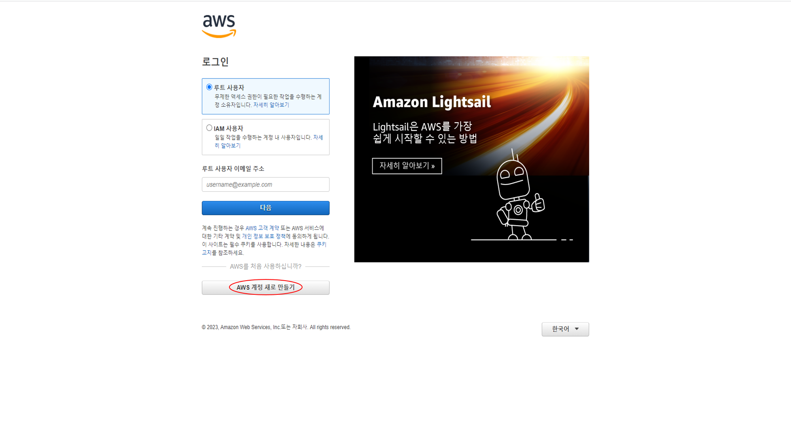
먼저 아마존 AWS에 회원가입을 합니다.
회원가입 시 결제카드를 연결시키고 로그인 시 메인 콘솔 창이 뜹니다.
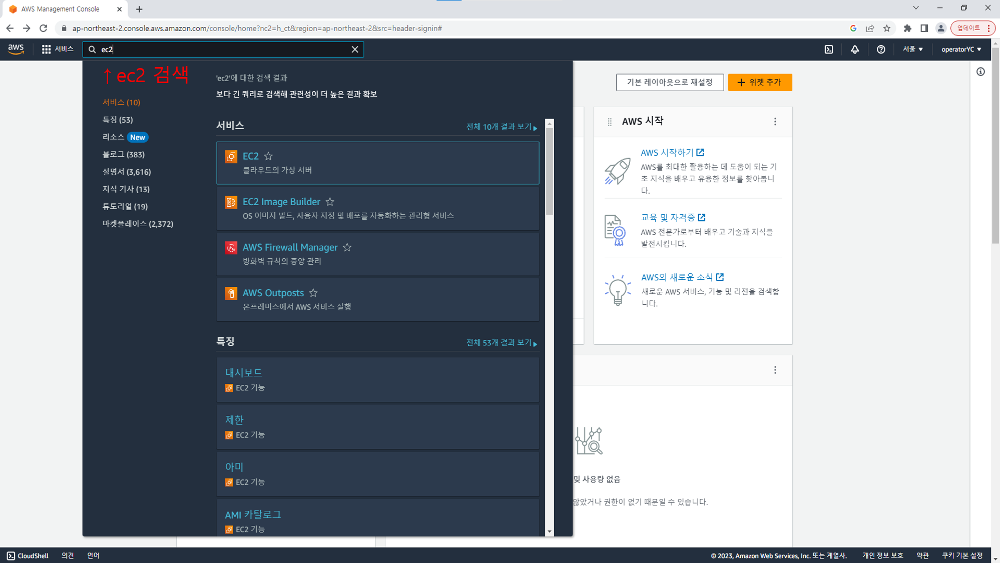
콘솔 창에서 ec2를 검색합니다.
그럼 EC2 대시보드가 나옵니다.
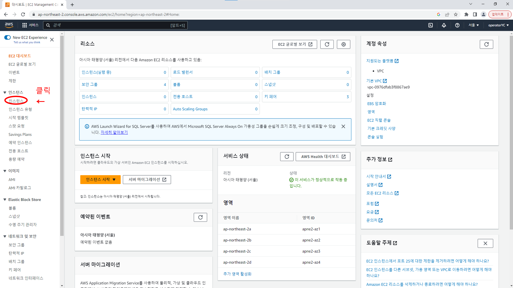
인스턴스를 클릭해 들어갑니다
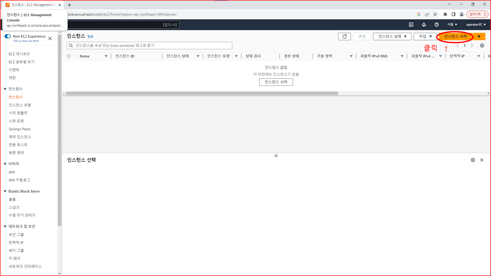
인스턴스 시작을 클릭해줍니다
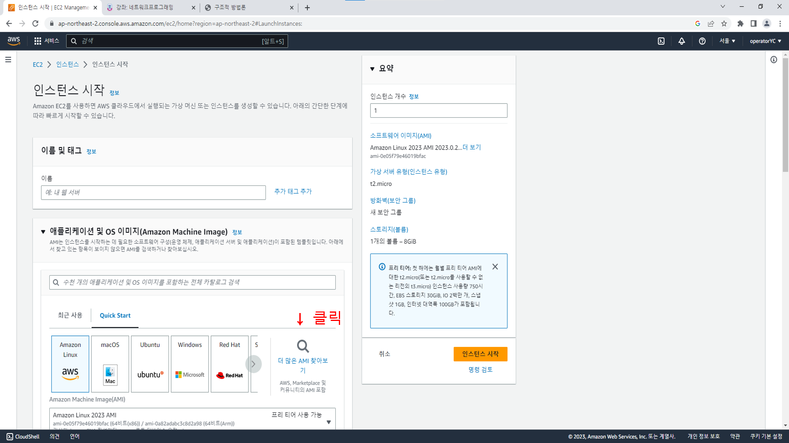
시작을 눌러 들어가면 화면과 같이 나오는데
여기서 우선 "더 많은 AMI 찾아보기"를 클릭해줍니다
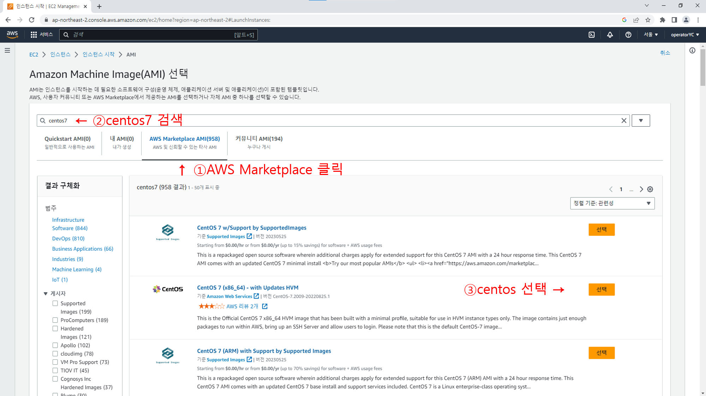
"AWS Marketplace"를 선택해주고 검색창에 "centos"를 검색한 뒤
화면에 나온것과 같은 "CentOS 7"를 선택해 줍니다.
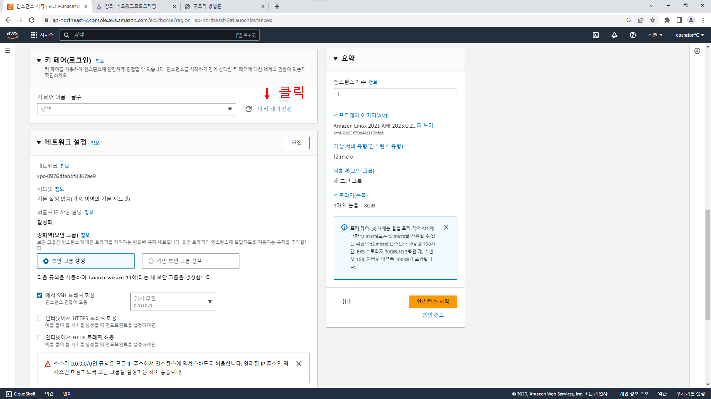
웹서버의 보안을 위해 새 키 페어 생성을 합니다.
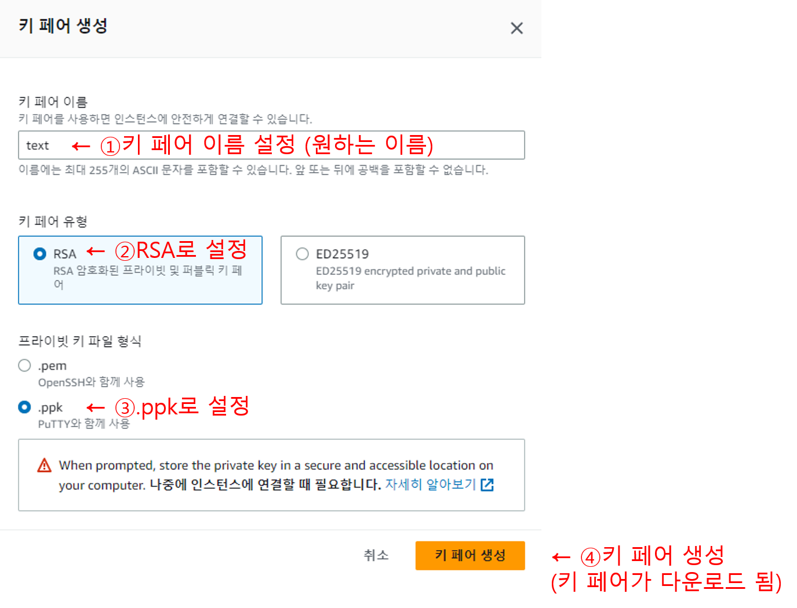
우선 키 페어 이름을 설정하고 유형을 선택한 뒤 키 파일 형식을 선택해줍니다
※ 꼭 .ppk로 설정해줘야 합니다
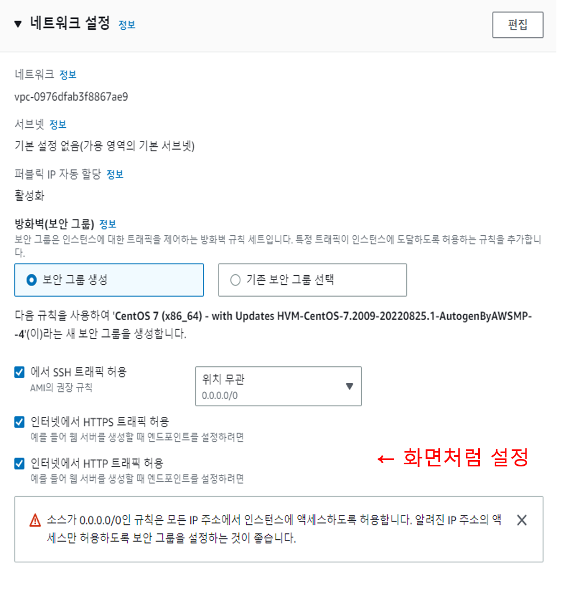
화면과 같이 설정 해줍니다.
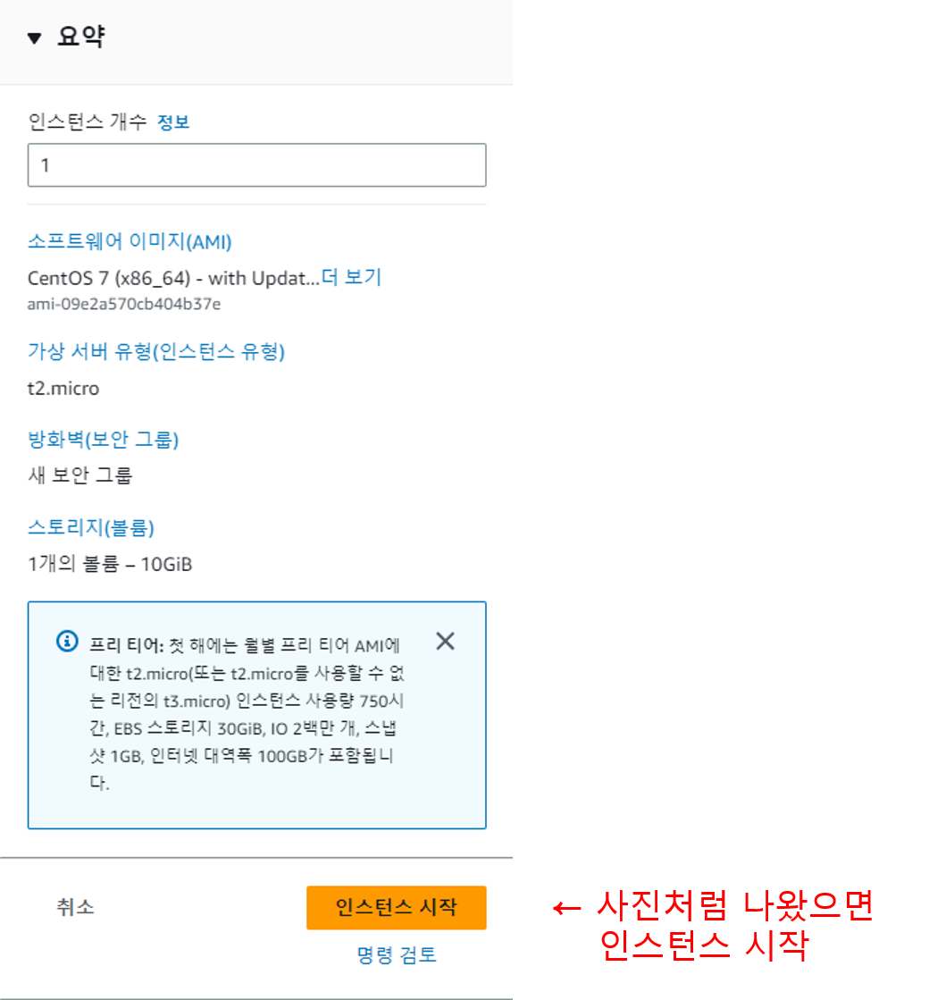
화면과 같이 나왔으면 인스턴스 시작을 눌러줍니다.
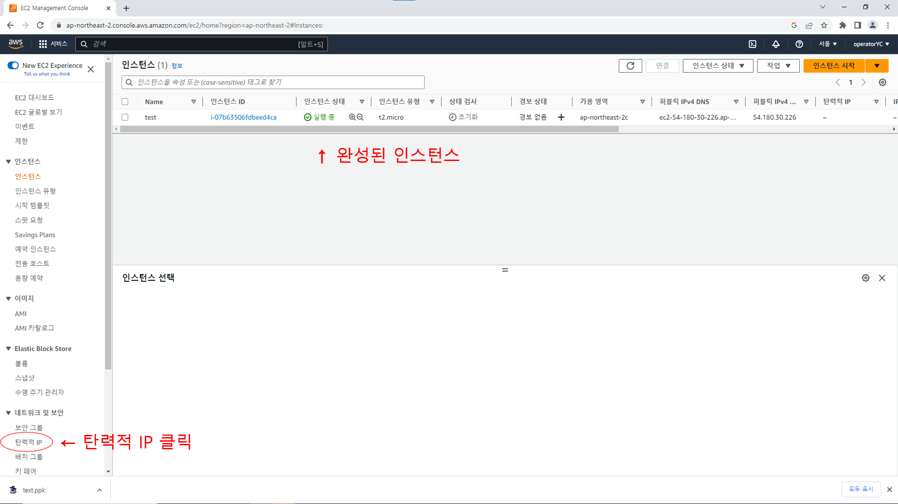
인스턴스가 실행중으로 전환되었는지 확인을 하고 제대로 되었으면 탄력적 IP로 넘어가줍니다.